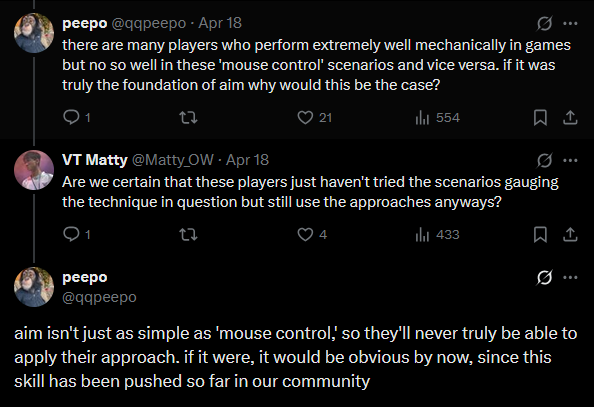

Aimtraining Cannot Justify Itself
I’ve been aimtraining on and off for about 5 years now, ranging from 5-hour daily grinds to causal weekly sessions, it has undoubtedly elevated my ability as a player… and it was also pretty fun. Some might find the notion of shooting at dots on a blank wall fun to be absurd, but for someone like me it is quite calming, especially when paired with some good background noise. Regardless, I have over a thousand hours in the “hobby”, and have the scores to show for it - I am even a Sparky Aim Grandmaster, a title not many can claim to have.
Aimtraining is quite new - both kovaak’s and aimlabs came out in 2018, with the scene only really taking off around the pandemic, steadily gaining popularity to this day. As the scene grows, it’s inevitable that we run into issues, some are endemic to all newly established domains - unavoidable growing pains that will eventually go away, but some are unique to the community, and require both reflection and critique.
Unfortunately, as it exists now, I believe there’s only one conclusion: Aimtraining CANNOT justify itself.
The goal of aimtraining is self-explanatory: To train and improve one’s aim. However, the way that aimtraining is currently framed, understood, and “marketed” seriously harms its effectiveness and reputation. To start off, is the aim in-game? Or just in the trainers? While this may be obvious to some readers, they are not the same thing, even just in terms of aiming, there are many more variables in-game that influence and change HOW and WHERE you aim.
Let’s take tracking-heavy games like Overwatch or Apex Legends as examples: in these games, there’s always an intention behind enemy movement, whether it is related to map geometry, objectives, or even goals in dodging or strafeaiming, these change how you aim as you have a better understanding of their movement, instead of purely reacting to them like how you would in an aimtrainer. Take a look at how high level aimtrainer mains (Who often do not play actual games much.) aim in-game - Notice how strained their aim is, there’s a sense that they are barely holding onto the target, doing difficult and unnecessary microadjustments, a reactive, flashy style of aiming. Compare this to in-game aimers and see how much more optimal (One may even say “calm”.) their aim is, you can sense the confidence they have in their reading, moving their mouse as little as they can, yet landing every shot.
Here, many will correctly argue that aimtrainers teach you mouse control, and nothing more. I am not arguing that mouse control is not important, or that it is not worth practicing, the point I am making is that mouse control cannot be directly mapped to in-game aim, that there is a disconnect between the two on a fundamental level.
So, there is this fundamental disconnect, is it elaborated well in the community? Does the community highlight it? Not at all. Take a look at the available resources and how community figures talk about “aim”, there is an almost fanatical belief that any in-game situation and context can be replicated in aimtrainers as long as they play the correct scenario. For another example, let’s take underaiming short strafes in-game, a common topic newcomers struggle with, as it is difficult to do. Other players often recommend “underaiming scenarios” (VSS GP9, CFSI, et cetera), when the entire notion of underaiming stems from being able to parse the movement well, instead of the purely reactive, mechanical process that it is often reduced to here. A vast majority of the content and resources in aimtraining implicitly, or even explicitly rely on confounding mouse control and in-game aim, when there is only an overlap between both. This is an easy and understandable mistake to make for novice players, after all, both are physically the same thing - moving your mouse, but this is a lethal, unacceptable mistake to see from respected community members.
Again, many would retreat and argue that the content and resources were meant for aimtrainers only! They were only talking about mouse control and nothing else, anyone making the mistake of taking it as general aim advice is stupid and ignorant! However, when all the top aimtrainer mains call themselves “aimers” having the best “aim” and all the resources are titled something along the lines of “How to improve your aim”, can you truthfully argue that there is not even a slight hint of deception here?
On the other hand, let’s be fair - some of this is excusable, aimtraining is still a relatively new field, an unexplored domain space, it’s unavoidable that we run into misconceptions, bad practices… and grifters, which brings me to the next issue.
There’s a lot of “aim coaches” in the scene, some are competent players who have seen success in their methods, either in aimtrainers or (preferably) in-game, but some are Voltaic masters that have not seen success in both. I am going to put this bluntly: It is insulting that the latter can proclaim themselves as coaches without being instantly laughed off twitter.
Knowledge domains are often constructed from the bottom-up, individuals put their theory to the test not by talking, but by doing. If they see success from their methods, they share their findings with the rest of the community, and the cycle repeats until a robust, rigorous knowledge base is constructed; Much of science progresses in this exact manner - look at how far we’ve come from banging on rocks.
Notice how such progress requires the individual to have their skin in the game, and prove that their knowledge works, otherwise, the “knowledge” stays as theory at best, and crazed ramblings at worst. With all of my criticisms, aimtraining also has seen such progress - players now have access to better resources than ever before, we are quite far from the days of reading the schizophrenic rants of a bigoted frenchman. However, aimer7 can at least claim to see success from his methods (Assuming he is not lying about his achievements.), so why do we allow all these incompetent “coaches” to stick around in the scene making money off others, when they have nothing to show for it?
True mastery, regardless of the field, comes from building the intuition between concepts, it’s easy to say you could’ve done X or Y with the power of hindsight, but hard to actually do X and Y in the moment, someone that can repeat a Viscose video word for word does not mean they are going to shoot like Viscose, this parroting of the “canon theory” is not only seen in mediocre coaches, but in most in the community as well.
Reddit is mostly a hellscape filled with mediocre clips - “I aimtrained for 9 trillion hours and this is what my aim looks like!” (1 minute of Apex clips on level 20 players in a mixtape game.), but it’s also a good window to observe the average player, after a while, you start seeing the same themes: VDIM, fundamental playlists, don’t benchgrind, terrible advice on strafe, and of course, anti-aim assist circlejerking. There may be some truth in what they say, especially that last one, but again, they are just parroting what they are told, and the self-criticality necessary for improvement is sorely missing. Let's be honest here: This is a reflection of the community, what our systems of knowledge produce - the result of our resources, content, and understanding of aimtraining.
Here, we need to resist the temptation to throw our hands up and say it is the fault of these gold players, that they don’t have the right mindset, they don’t use the right resources, and if they do, they aren’t using them right - they are stupid, they are. However, when one has to avoid this many pitfalls, jump through hoop after hoop, reject and ignore half of the advice they receive in order to get value from shooting at an untextured, flying ball for hours, can the field justify its own existence? I don’t think so.
That’s it for the key issues that I see within the aimtraining space, but there are many smaller issues within it that we can also quickly rant about, after all, complaining is fun!
Firstly, the prevalence of the “grind” mindset, ignoring the self-grandiosity and almost lethal dose of cringe stemming from the fact that one of the biggest accounts pushing this is a gold player with 1500 hours, fetishizing the status that comes from skill and implying some sort of individual sacrifice is needed to improve at a fucking VIDEO GAME is not only deeply unserious, but also damaging to one’s improvement as well, do you want to be good, or do you want to be liked for being good?
Secondly, the ignorance surrounding strafe, while this isn’t exactly aim, your own movement also affects how you aim… since it moves your crosshair. Aim is only one part of the overall puzzle that is mechanics, ignoring strafing, especially when it comes to dodging, is a critical mistake that many players make, leading to the same anti-mirror one clips where they almost lose the fight despite hitting every shot, or high profile aimtrainer mains getting completely outclassed in various duel gamemodes from R5Reloaded to Quake Live, losing to people standing still.
Lastly, the disgusting consumerism that exists in the peripherals industry, again, this isn’t strictly about aimtraining, but both scenes have a massive overlap. A widespread lack of innovation has led to an abundance of boring, overpriced products relying on garbage anime slop designs and FOMO to make a profit, the weeaboo-ness of it all doesn’t help their case either (It almost feels racist, but that’s a separate discussion.). Long time followers may remember that I actually have a Wallhack affiliate code, while I do like money, I do not like it enough to turn my socials into advertising space for a brand that I do not support, this is why I do not promote any of their drops, and have since removed the code from my bio.
With what I’ve written here, some may be under the assumption that I think aimtraining is doomed as a field, but that cannot be further from the case. While I think aimtraining can’t justify itself right now, I have full confidence that we can overcome these issues and continue to develop the scene as a community. There is undeniable value in aimtraining, and with changes to people’s understanding, mindset, and with time, I believe that aimtraining can one day become a rigorous field where players of all skill levels can partake and see real improvement, and I hope that I can be there to see it.
Written 25.04.2025